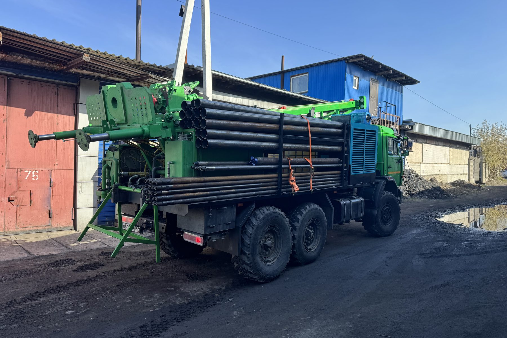

Обсадная труба: сталь или пластик и почему это не всё
Спор «пластик или металл» обычно ведут в отрыве от глубины и пород. Разбираем свойства материалов и отдельно — неприятный факт: профильного ГОСТа на обсадную трубу для скважины на воду нет.
Спор «пластик или металл» в комментариях под объявлениями о бурении обычно идёт так, будто у него есть универсальный правильный ответ — как будто один материал всегда лучше другого, и дело только в цене. На практике правильный ответ зависит от глубины скважины и характера пород на конкретном участке, а фраза «труба по ГОСТу» в описании товара, которая должна была бы всё расставить по местам, на самом деле почти ничего не гарантирует. Разбираем оба вопроса по порядку.

Что на самом деле нагружает трубу
Обсадная колонна в скважине работает не просто «трубой в земле» — она держит на себе несколько разных типов нагрузки одновременно, и материал должен выдерживать все сразу, а не один из них.
Смятие. Порода снаружи давит на трубу со всех сторон, и это давление растёт с глубиной. В неустойчивых, склонных к обрушению породах эта нагрузка ощутимо выше, чем в плотных стабильных пластах. Труба, недостаточно прочная на смятие, может деформироваться и сузить внутренний диаметр колонны — вплоть до того, что в неё перестаёт проходить насосное оборудование нужного размера.
Растяжение. Собственный вес всей колонны труб висит на самом верхнем её участке — чем глубже скважина, тем больше суммарный вес трубной колонны, который должен выдержать материал и резьбовые или клеевые соединения между секциями, не разойдясь и не лопнув под собственной тяжестью.
Коррозия. Для стали это химическое воздействие среды — воды и грунта, — способное годами разъедать металл изнутри и снаружи, постепенно уменьшая толщину стенки и, соответственно, прочность на смятие и растяжение, которая была рассчитана для новой трубы, а не для трубы через десять лет службы.
Материал, который хорошо противостоит одной из этих нагрузок, не обязательно хорош против остальных — именно поэтому выбор не сводится к вопросу «что прочнее вообще», а требует понимания, какая из трёх нагрузок наиболее критична на конкретном участке.
Есть и четвёртый фактор, о котором реже вспоминают в спорах про материал, — соединения между секциями трубы. Колонна редко представляет собой одну цельную трубу от устья до забоя: чаще это несколько секций, состыкованных резьбой, муфтой или сваркой в зависимости от материала. Именно в местах стыков чаще всего проявляются проблемы, даже если сама труба выбрана правильно, — негерметичный или непрочный стык способен свести на нет расчёт по материалу основной трубы.
Сталь, ПНД и нПВХ: где каждый оправдан
Сталь — самый прочный вариант на смятие и растяжение среди распространённых материалов, что делает её предпочтительной там, где колонна проходит через неустойчивые, склонные к обрушению породы или идёт на значительную глубину с высокой суммарной нагрузкой. Обратная сторона — коррозия: в воде с повышенной агрессивностью металл разрушается быстрее, и это стоит закладывать в ожидания по сроку службы конструкции.
ПНД (полиэтилен низкого давления) коррозии в химическом смысле не подвержен вообще, гибок, относительно лёгок и обычно дешевле стали. Обратная сторона — прочность на смятие ниже, чем у стали: в мягких, устойчивых породах и на умеренной глубине это не проблема, а вот в неустойчивых или на большой глубине, где давление породы выше, ПНД без дополнительного обоснования не всегда подходящий выбор.
нПВХ (непластифицированный поливинилхлорид) занимает промежуточное положение: он жёстче ПНД, что даёт лучшую прочность на смятие, но при этом более хрупок при механических ударах и низких температурах, особенно при монтаже. Как и ПНД, нПВХ не подвержен коррозии.
Универсального победителя тут нет — есть соответствие материала конкретным условиям участка: глубине, устойчивости пород, химии воды. Правильный вопрос подрядчику — не «какая труба лучше», а «почему для моего участка выбран именно этот материал».
Неудобный факт: профильного ГОСТа на обсадную трубу для воды нет
Здесь начинается менее приятная часть разговора. В прайсах и объявлениях обсадные трубы для скважин на воду нередко сопровождаются пометкой «по ГОСТу» — и это создаёт впечатление, что существует профильный государственный стандарт, которому труба соответствует. При проверке первоисточников выясняется, что это не так.
ГОСТ 632-80 «Трубы обсадные и муфты к ним» — тот самый стандарт, на который чаще всего ссылаются, — дословно распространяется на стальные бесшовные трубы с треугольной и трапецеидальной резьбой и муфты к ним, трубы с высокогерметичными соединениями и безмуфтовые раструбные трубы, «применяемые для крепления нефтяных и газовых скважин». Скважины на воду в области применения этого документа не названы вообще — стандарт написан для другой отрасли.
С ГОСТ 18599-2001 «Трубы напорные из полиэтилена» ситуация похожая. Он распространяется на напорные трубы из полиэтилена, предназначенные для трубопроводов, транспортирующих воду, в том числе для хозяйственно-питьевого водоснабжения, при рабочей температуре от 0 до 40 °C и номинальном давлении до 2,5 МПа. Это стандарт про напорные трубопроводы — то есть про трубы, по которым вода уже поднята и движется под давлением к потребителю, а не про обсадную колонну, которая держит стенки скважины в земле. Обсадные трубы в области применения документа тоже не упомянуты. К тому же с 1 сентября 2024 года применение этого документа как национального стандарта РФ прекращено — он сохраняет статус межгосударственного, а на смену ему как национальному стандарту пришёл ГОСТ Р 70628.2, который по своему назначению регулирует ту же область — напорные полиэтиленовые трубопроводы, а не обсадные колонны скважин.
Итог простой и не слишком приятный для отрасли: профильного государственного стандарта, который прицельно описывал бы обсадную трубу именно для скважины на воду, в российской нормативной базе на сегодня нет.
Что это значит для покупателя
Это не означает, что трубы, которые продают под обсадную колонну, плохие или ненадёжные — это означает лишь то, что ссылка на ГОСТ в прайсе ничего не подтверждает применительно к скважине на воду, потому что оба часто упоминаемых стандарта написаны для других задач. Производители при этом не остаются без документации вовсе: трубы для обсадных колонн скважин на воду выпускаются по техническим условиям (ТУ) — документам конкретного производителя, которые тот разрабатывает и регистрирует сам.
Важно не путать это с «значит, трубы хуже»: ТУ вполне может быть строже отраслевого ГОСТа по отдельным параметрам — это решает конкретный производитель, а не формат документа сам по себе. Но именно поэтому проверять нужно не факт наличия ссылки на ГОСТ, а содержание конкретного ТУ: толщину стенки, марку материала, для нПВХ и ПНД — стандартное отношение диаметра к толщине стенки (SDR), заявленные характеристики на смятие и растяжение. Толщина стенки — тот параметр, который проще всего проверить и сложнее всего подделать: попросите у продавца документ на конкретную партию труб, а не общую фразу «делаем по ГОСТу», и сравните заявленную толщину с тем, что реально приходит на объект.
Комбинированные конструкции: не обязательно только один материал
Спор «сталь или пластик» иногда предполагает, что вся колонна должна быть из одного материала целиком, — но это не единственный подход. На практике встречаются комбинированные конструкции: например, верхний интервал, проходящий через неустойчивые или трещиноватые породы, где риск смятия и обрушения максимален, крепят более прочной стальной трубой, а ниже, где порода устойчивее и решающим фактором становится не механическая нагрузка, а химическая стойкость и цена, переходят на трубу меньшего диаметра из ПНД или нПВХ.
Такое решение не универсально и не всегда оправдано — усложнение конструкции имеет смысл только там, где верхний и нижний интервалы участка действительно заметно различаются по устойчивости пород, а не как способ формально удорожить смету. Уместность именно такого решения на конкретном участке — вопрос, который решает инженер по факту разреза, открывшегося при бурении, а не готовое правило на все случаи.
Здесь же стоит развеять обратное заблуждение: если подрядчик предлагает не комбинированную, а единую по материалу колонну на всю глубину — это не обязательно экономия на качестве. Для многих участков однородная по устойчивости геология вообще не создаёт повода усложнять конструкцию, и вопрос вновь упирается не в схему как таковую, а в то, объяснил ли инженер, почему выбрано именно так с учётом разреза этого конкретного двора.
Что спросить вместо «а это по ГОСТу»
Разбор показывает: вопрос про ГОСТ не тот, что стоит задавать. Практический список вопросов подрядчику или продавцу труб выглядит иначе: по каким ТУ изготовлена труба и можно ли посмотреть документ, какая толщина стенки заявлена и совпадает ли она с тем, что придёт на объект, почему для конкретного участка выбран именно этот материал — с учётом глубины и устойчивости пород, которые покажет проходка. Из чего вообще состоит скважина и как обсадная колонна соотносится с остальными узлами конструкции, разобрано отдельно: как устроена скважина на воду. А связь конструкции колонны с общим ресурсом скважины — в статье сколько служит скважина на воду. Итоговое решение по материалу и диаметру для своего участка даёт только инженер по факту разреза — это часть того, что определяется при заказе бурения скважины на воду.